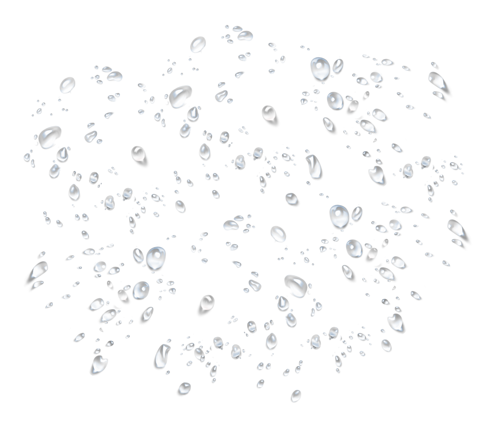
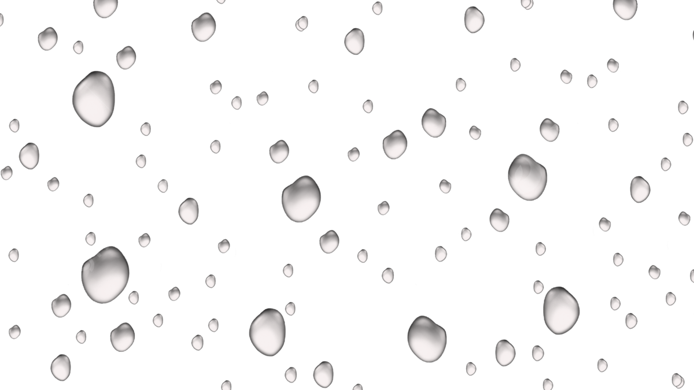
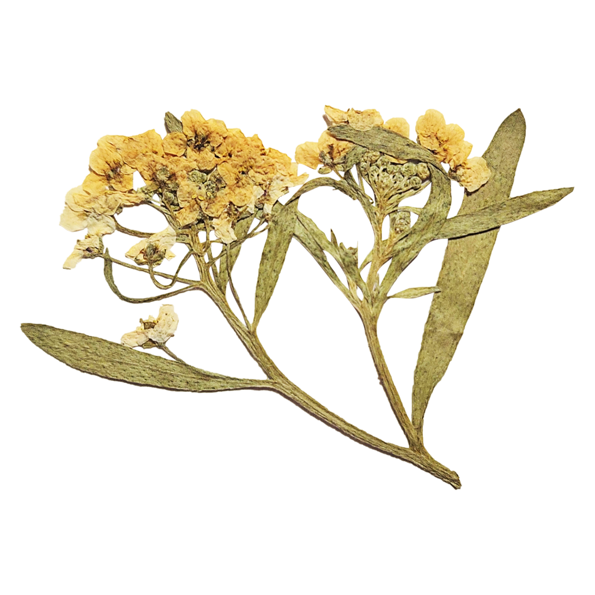
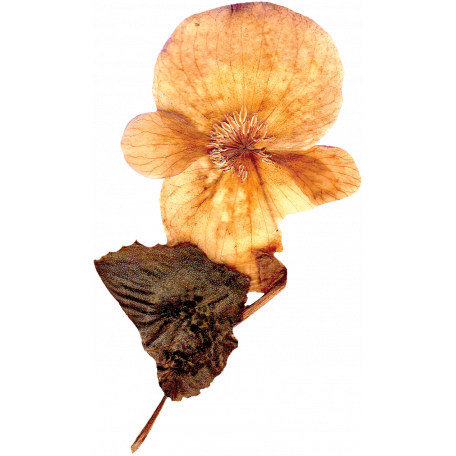

—
back
   why can't we respect nature?
why can't we respect nature?
Dim vales—and shadowy floods—
And cloudy-looking woods,
Whose forms we can't discover
For the tears that drip all over:
Huge moons there wax and wane—
Again—again—again—
Every moment of the night—
Forever changing places—
And they put out the star-light
With the breath from their pale faces.
About twelve by the moon-dial,
One more filmy than the rest
(A kind which, upon trial,
They have found to be the best)
Comes down—still down—and down
With its centre on the crown
Of a mountain's eminence,
While its wide circumference
In easy drapery falls
Over hamlets, over halls,
Wherever they may be—
O'er the strange woods—o'er the sea—
Over spirits on the wing—
Over every drowsy thing—
And buries them up quite
In a labyrinth of light—
And then, how, deep! —O, deep,
Is the passion of their sleep.
In the morning they arise,
And their moony covering
Is soaring in the skies,
With the tempests as they toss,
Like—almost any thing—
Or a yellow Albatross.
They use that moon no more
For the same end as before,
Videlicet, a tent—
Which I think extravagant:
Its atomies, however,
Into a shower dissever,
Of which those butterflies
Of Earth, who seek the skies,
And so come down again
(Never-contented things!)
Have brought a specimen
Upon their quivering wings.
sometimes i wish i could get lost
in the intimacy of nature;
meet the birds and the bees,
saying hello to all of the flowers
and thanking them for their beauty.
tha's how nature should be, right?
but some will disagree;
humans are powerful,
intellectual, intuitive, cynical;
we steal what is not ours
for the sake of ourselves,
for “efficiency,” for “profit,”
but i think it's for destruction
can't we all respect one another
and the animals, the plants,
who all did nothing wrong
but merely exist?
why can't we say hello
to the birds, the bees, the trees,
instead of eradicating them from being
simply for one species
-sincerely,
a fellow human being